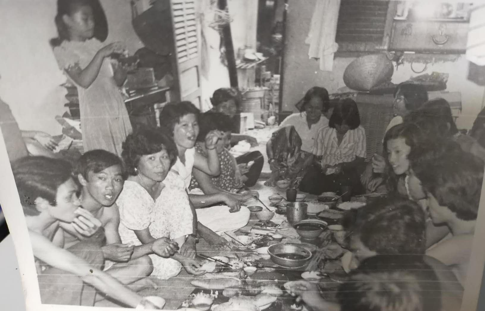
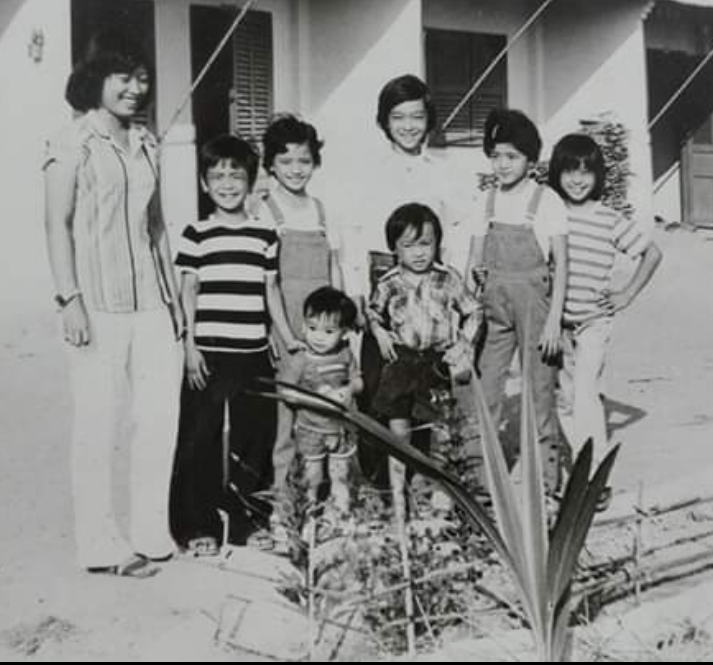

叶家大小姐回忆小时候圣诞节（粤语）
叶家大小姐回忆小时候生活（粤语）
叶家大小姐于越南（约18岁） ベトナムの葉沢家のファーストレディ（18歳くらい）
叶家大小姐于越南（约18岁） ベトナムの葉沢家のファーストレディ（18歳くらい）

越南难民营订婚宴（80年代） ベトナム難民キャンプでの婚約パーティー（1980年代)

越南难民营叶家孩子和亲戚朋友们（80年代左一为叶家大小姐） ベトナム難民キャンプでの葉沢家の子供たち、親族、友人たち（1980年代、左から1人目が葉沢家のファーストレディ）
越南难民营法语班（80年代，叶家大小姐为前排数起第三排右二深色衣服） ベトナム難民キャンプでのフランス語の授業（1980年代、葉沢家のファーストレディは前から数えて3列目、右から2番目の黒いドレスの人）
现在的叶家大小姐 現在の葉沢家のファーストレディ
×